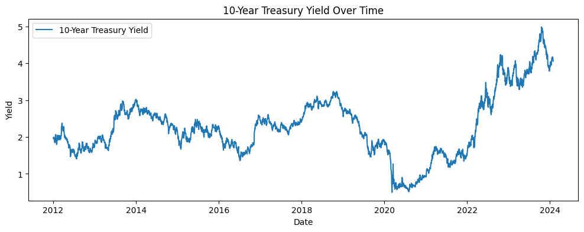
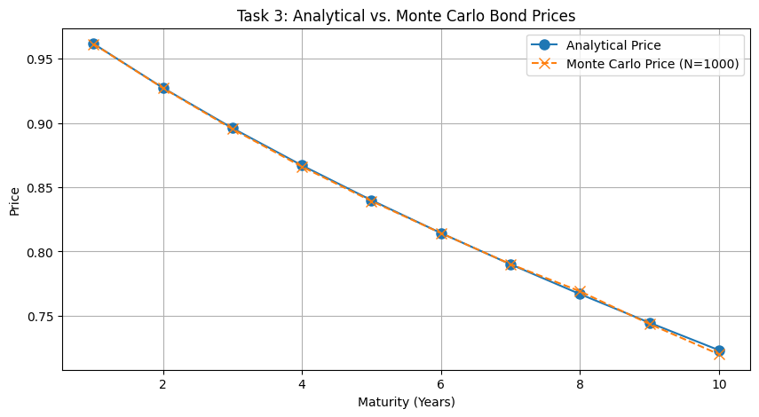
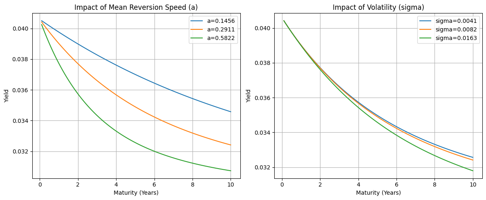
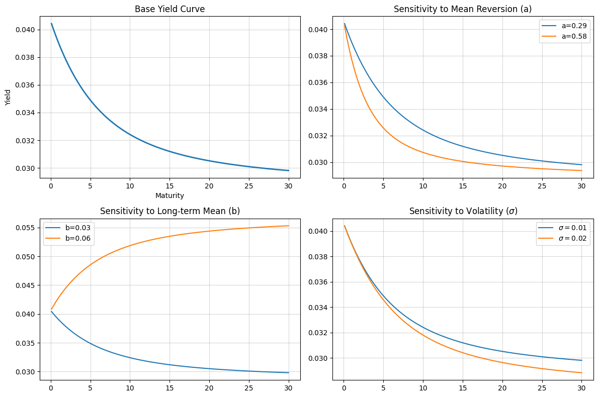

Code
import numpy as np
import matplotlib.pyplot as plt
import pandas as pd
import seaborn as sns
import datetime
from scipy.stats import linregress
from scipy.stats import norm
import statsmodels.api as smThe Vasicek model is a popular short-rate model used in financial mathematics to describe the evolution of interest rates. It is defined by the following stochastic differential equation (SDE): \[dr_t = a(b - r_t)dt + \sigma dW_t \] where: - \(r_t\) is the short-term interest rate at time \(t\), - \(a\) is the speed of mean reversion, - \(b\) is the long-term mean level, - \(\sigma\) is the volatility of the interest rate, - \(W_t\) is a standard Wiener process (Brownian motion).
import numpy as np
import matplotlib.pyplot as plt
import pandas as pd
import seaborn as sns
import datetime
from scipy.stats import linregress
from scipy.stats import norm
import statsmodels.api as smimport pandas_datareader.data as web
start_date = datetime.datetime(2020, 1, 1)
end_date = datetime.datetime(2025, 12, 31)
df = web.DataReader('DTB3', 'fred', start_date, end_date)# data = web.DataReader('DGS1', 'fred', start_date, end_date)
# data = data.dropna()
# data.index = pd.to_datetime(data.index)
# data.head()import yfinance as yf
symbol = "^TNX"
start_date = "2012-01-01"
end_date = "2024-01-31"
data = yf.download(symbol, start=start_date, end=end_date)
data = data['Close'].dropna()
rate = data.values
plt.figure(figsize=(12,4))
plt.plot(data, label='10-Year Treasury Yield')
plt.title('10-Year Treasury Yield Over Time')
plt.xlabel('Date')
plt.ylabel('Yield')
plt.legend()
plt.show()[*********************100%***********************] 1 of 1 completed
df = data.copy()df.head()| Ticker | ^TNX |
|---|---|
| Date | |
| 2012-01-03 | 1.960 |
| 2012-01-04 | 1.995 |
| 2012-01-05 | 1.993 |
| 2012-01-06 | 1.961 |
| 2012-01-09 | 1.960 |
df.info()<class 'pandas.core.frame.DataFrame'>
DatetimeIndex: 3037 entries, 2012-01-03 to 2024-01-30
Data columns (total 1 columns):
# Column Non-Null Count Dtype
--- ------ -------------- -----
0 ^TNX 3037 non-null float64
dtypes: float64(1)
memory usage: 47.5 KBdf = df.dropna()
df.index = pd.to_datetime(df.index)
df.head()| Ticker | ^TNX |
|---|---|
| Date | |
| 2012-01-03 | 1.960 |
| 2012-01-04 | 1.995 |
| 2012-01-05 | 1.993 |
| 2012-01-06 | 1.961 |
| 2012-01-09 | 1.960 |
plt.figure(figsize=(12, 6))
sns.lineplot(data=df, x=df.index, y='^TNX')
plt.title('10-Year Treasury Yield')
plt.xlabel('Date')
plt.ylabel('Rate (%)')
plt.grid(True)
plt.show()
OLP Calibrtion Method:
We can calibrate the Vasicek model using standard Linear Regression (Ordinary Least Squares - OLS).
The dicrete Euler equation for the Vasicek model is given by: \[r_{t+1}-r_t = a(b-r_t)\Delta t + \sigma \sqrt{\Delta t} \epsilon_t \]
We can rewrite it to look like a linear regression equation: $(Y=+ X + ) $
\[\underbrace{r_{t+1}}_{Y} = \underbrace{ab\Delta t}_{\alpha} + \underbrace{(1 - a\Delta t)}_{\beta} \underbrace{r_t}_{X} + \underbrace{\sigma \sqrt{\Delta t} \epsilon_t}_{\text{noise}} \]
Where \(\epsilon_t\) is a standard normal random variable.
By running a regression of the change in rate \((Y)\) against the current rate \((X)\), we find estimates for \(\alpha\) and \(\beta\).
def calibrate_vasicek(rates, dt=1/252):
"""
Calibrates a, b, sigma using OLS on discretized SDE:
r_{i+1} = a*b*dt + (1 - a*dt)*r_i + sigma*sqrt(dt)*eps
"""
y = rates.values[1:]
x = rates.values[:-1]
X = sm.add_constant(x)
model = sm.OLS(y, X).fit()
alpha, beta = model.params
residuals_std = np.std(model.resid)
# Extract parameters from regression coefficients
a = (1 - beta) / dt
b = alpha / (a * dt)
sigma = residuals_std / np.sqrt(dt)
return a, b, sigmarates = df['^TNX'] / 100
a, b, sigma = calibrate_vasicek(rates,dt=1/252)
print(f"Calibrated Vasicek parameters:")
print(f"a (speed of reversion): {a}")
print(f"b (long-term mean): {b}")
print(f"sigma (volatility): {sigma}")Calibrated Vasicek parameters:
a (speed of reversion): 0.2911154424136324
b (long-term mean): 0.028783115580092614
sigma (volatility): 0.00816174293304405# Optional: Visualize the fit
plt.figure(figsize=(12, 6))
plt.plot(df.index, df['^TNX']/100, label='Historical Rates')
plt.axhline(y=b, color='r', linestyle='--', label=f'Calibrated Mean (b={b:.1%})')
plt.title("Historical Short Rates vs. Calibrated Long-Term Mean")
plt.legend()
plt.grid()
plt.show()
To simulate the short rate \(r_t\) using the Vasicek model, we can use the following discretized version of the SDE: \[r_{t+\Delta t} = r_t + a(b - r_t)\Delta t + \sigma \sqrt{\Delta t} Z_t\]
where \(Z_t\) is a standard normal random variable.
def simulate_vasicek_paths(r0, a, b, sigma, T, dt, n_paths):
n_steps = int(T / dt)
rates = np.zeros((n_steps + 1, n_paths))
rates[0] = r0
for t in range(1, n_steps + 1):
# dz ~ N(0, sqrt(dt))
dz = np.random.normal(0, np.sqrt(dt), n_paths)
# dr = a(b - r)dt + sigma * dW
rates[t] = rates[t-1] + a * (b - rates[t-1]) * dt + sigma * dz
return rates# Simulation parameters
r0 = rates[-1]
T = 1.0 # 1 year
dt = 1/252 # daily steps
n_paths = 1000 # number of simulated paths
rates_sim = simulate_vasicek_paths(r0, a, b, sigma, T, dt, n_paths)
time_grid = np.linspace(0, T, int(T/dt) + 1)
mean_rates = np.mean(rates_sim, axis=1)
plt.figure(figsize=(10, 6))
plt.plot(time_grid, rates_sim[:, :50], lw=1)
plt.plot(time_grid, mean_rates, lw=2, color='blue')
plt.title('Simulated Interest Rate Paths (Vasicek Model)')
plt.xlabel('Time (years)')
plt.ylabel('Interest Rate (%)')
plt.axhline(y=b, color='r', linestyle='--', label='Long-term Mean (b)')
plt.text(0.1, b - 0.003, f'b = {b:.4f}', color='r')
plt.legend()
plt.grid(True)
plt.show()C:\Users\mengh\AppData\Local\Temp\ipykernel_2312\3343935822.py:2: FutureWarning: Series.__getitem__ treating keys as positions is deprecated. In a future version, integer keys will always be treated as labels (consistent with DataFrame behavior). To access a value by position, use `ser.iloc[pos]`
r0 = rates[-1]
The price of a zero-coupon bond in the Vasicek model can be calculated using the following formula: \[P(t,T) = A(t,T) e^{-B(t,T) r_t}\] where: - \(P(t,T)\) is the price of the bond at time \(t\) maturing at time \(T\), - \(A(t,T)\) and \(B(t,T)\) are functions defined as:
\[B(t,T) = \dfrac{1 - e^{-a(T-t)}}{a}\]
\[A(t,T) = \exp\left( \left( b - \dfrac{\sigma^2}{2a^2} \right) \left( B(t,T) - (T-t) \right) - \dfrac{\sigma^2 B(t,T)^2}{4a} \right)\]
def analytical_bond_price(r, a, b, sigma, T):
B = (1 - np.exp(-a * T)) / a
A = np.exp((B - T) * (a**2 * b - 0.5 * sigma**2) / a**2 - (sigma**2 * B**2) / (4 * a))
P = A * np.exp(-B * r)
return P
T_bond = 1.0 # 1 year bond
bond_prices = analytical_bond_price(r0, a, b, sigma, T_bond)
print(f"Analytical price of a zero-coupon bond maturing in {T_bond} year(s): {bond_prices:.4f}")Analytical price of a zero-coupon bond maturing in 1.0 year(s): 0.9617To estimate the price of a Zero-Coupon Bond (ZCB) using Monte Carlo simulation, we can follow these steps:
The price of a bond is the risk-neutral expectation of the discounted payoff:
\[P(0,T) = E^Q\left[e^{-\int_0^T r_t dt}\right]\]
In our simulation, the integral becomes a sum, and the expectation is approximated by the average over many simulated paths.
\[P_{MC} \approx \dfrac{1}{N} \sum_{i=1}^{N}\left( \exp \left(-\sum_{j=0}^{M-1} r_{t_j}^{(i)} \Delta t \right)\right)\]
def price_bond_mc(rates, dt):
# Stochastic Discount Factor: exp(-integral of r_t dt)
integral_r = np.sum(rates[:-1, :], axis=0) * dt
payoffs = np.exp(-integral_r)
return np.mean(payoffs)
# Price a 1-year bond
T_target = 1.0
steps_target = int(T_target / dt)
mc_price = price_bond_mc(rates_sim[:, :], dt)
analyt_price = analytical_bond_price(r0, a, b, sigma, T_target)
print(f"--- Comparison ---")
print(f"Analytical Price (1Y): {analyt_price:.5f}")
print(f"Monte Carlo Price (1Y): {mc_price:.5f}")
print(f"Error: {abs(mc_price - analyt_price):.5f}")--- Comparison ---
Analytical Price (1Y): 0.96173
Monte Carlo Price (1Y): 0.96175
Error: 0.00001# Parameters
T_max = 10
dt = 1/252
maturities = np.arange(1,T_max+1)
analytical_prices = [analytical_bond_price(r0, a, b, sigma, T) for T in maturities]
# Monte Carlo
n_paths = 1000
mc_prices = []
for T in maturities:
full_paths = simulate_vasicek_paths(r0, a, b, sigma, T, dt, n_paths)
integral_r = np.sum(full_paths, axis=0)*dt
mc_prices.append(np.mean(np.exp(-integral_r)))
plt.figure(figsize=(10, 5))
plt.plot(maturities, analytical_prices, 'o-', label='Analytical Price', markersize=8)
plt.plot(maturities, mc_prices, 'x--', label=f'Monte Carlo Price (N={n_paths})', markersize=8)
plt.title("Task 3: Analytical vs. Monte Carlo Bond Prices")
plt.xlabel("Maturity (Years)")
plt.ylabel("Price")
plt.legend()
plt.grid(True)
plt.show()
absolute_errors = [abs(ap - mp) for ap, mp in zip(analytical_prices, mc_prices)]
comparison_df = pd.DataFrame({
'Maturity (Years)': maturities,
'Analytical Price': analytical_prices,
f'Monte Carlo Price (N={n_paths})': mc_prices,
'Absolute Error': absolute_errors
})
comparison_df| Maturity (Years) | Analytical Price | Monte Carlo Price (N=1000) | Absolute Error | |
|---|---|---|---|---|
| 0 | 1 | 0.961734 | 0.961529 | 0.000205 |
| 1 | 2 | 0.927366 | 0.927190 | 0.000176 |
| 2 | 3 | 0.896006 | 0.895275 | 0.000731 |
| 3 | 4 | 0.867007 | 0.865980 | 0.001027 |
| 4 | 5 | 0.839894 | 0.839199 | 0.000695 |
| 5 | 6 | 0.814320 | 0.814280 | 0.000040 |
| 6 | 7 | 0.790027 | 0.790127 | 0.000099 |
| 7 | 8 | 0.766825 | 0.769030 | 0.002205 |
| 8 | 9 | 0.744570 | 0.743563 | 0.001008 |
| 9 | 10 | 0.723155 | 0.719999 | 0.003156 |
Using the analytical bond pricing formula, generate the yield curve for different maturities $ T $ by calculating the yield $ y(0,T) $: \[ y(0,T) = -\frac{1}{T} \ln(P(0,T)) \]
maturities = np.linspace(0.1, 10, 100)
def get_yields(a, b, sigma):
prices = [analytical_bond_price(r0, a, b, sigma, T) for T in maturities]
return -np.log(prices) / maturitiesplt.figure(figsize=(12, 8))
plt.plot(maturities, get_yields(a, b, sigma), label='Base Case', lw=2)
plt.title("Base Yield Curve")
plt.xlabel("Maturity")
plt.ylabel("Yield")
plt.tight_layout()
plt.show()
plt.figure(figsize=(12, 5))
plt.subplot(1, 2, 1)
a_imp = [a/2, a, a*2]
for a_val in a_imp:
yields = get_yields(a_val, b, sigma)
plt.plot(maturities, yields, label=f'a={a_val:.4f}')
plt.title("Impact of Mean Reversion Speed (a)")
plt.xlabel("Maturity (Years)")
plt.ylabel("Yield")
plt.legend()
plt.grid(True)
# Scenario B: Effect of 'sigma' (Volatility)
sigma_imp = [sigma/2, sigma, sigma*2]
plt.subplot(1, 2, 2)
for sig_val in sigma_imp:
yields = get_yields(a, b, sig_val)
plt.plot(maturities, yields, label=f'sigma={sig_val:.4f}')
plt.title("Impact of Volatility (sigma)")
plt.xlabel("Maturity (Years)")
plt.ylabel("Yield")
plt.legend()
plt.grid(True)
plt.tight_layout()
plt.show()
# Task 4: Yield Curve and Sensitivity
m_yields = np.linspace(0.1, 30, 100)
def get_yields(a, b, sigma):
prices = [analytical_bond_price(r0, a, b, sigma, T) for T in m_yields]
return -np.log(prices) / m_yields
plt.figure(figsize=(12, 8))
plt.subplot(2, 2, 1)
plt.plot(m_yields, get_yields(a, b, sigma), label='Base Case', lw=2)
plt.title("Base Yield Curve")
plt.xlabel("Maturity")
plt.ylabel("Yield")
plt.grid(alpha=0.5)
plt.subplot(2, 2, 2)
plt.plot(m_yields, get_yields(a, b, sigma), label=f'a={a:.2f}')
plt.plot(m_yields, get_yields(2*a, b, sigma), label=f'a={2*a:.2f}')
plt.title("Sensitivity to Mean Reversion (a)")
plt.legend()
plt.grid(alpha=0.5)
plt.subplot(2, 2, 3)
plt.plot(m_yields, get_yields(a, b, sigma), label=f'b={b:.2f}')
plt.plot(m_yields, get_yields(a, 2*b, sigma), label=f'b={2*b:.2f}')
plt.title("Sensitivity to Long-term Mean (b)")
plt.legend()
plt.grid(alpha=0.5)
plt.subplot(2, 2, 4)
plt.plot(m_yields, get_yields(a, b, sigma), label=f'$\sigma={sigma:.2f}$')
plt.plot(m_yields, get_yields(a, b, 2*sigma), label=f'$\sigma={2*sigma:.2f}$')
plt.title("Sensitivity to Volatility ($\sigma$)")
plt.legend()
plt.grid(alpha=0.5)
plt.tight_layout()
plt.show()